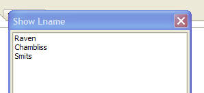

Xdialog ListBoxes - Dynamically Computing the Display Expression
A common requirement in an Xdialog is to display a listbox showing data from an array. The array is often a property array, and so the Xdialog displays data from one of the properties in the array.
For example, the property array shown below has 'fname' and 'lname' properties, and the Xdialog shows the value in the 'lname' property:
dim arr[0] as p
arr[].fname = "Sam"
arr[..].lname = "Raven"
arr[].fname = "Charles"
arr[..].lname = "Chambliss"
arr[].fname = "Dion"
arr[..].lname = "Smits"
ui_dlg_box("Show Lname",<<%dlg%
[.50,20index^#arr[[[\].lname];
%dlg%)
The resulting Xdialog looks like this:

But, what if you wanted the listbox to show both the 'fname' and 'lname' property? You could pre-process the array and add a new property called (say) 'Display' value to the array and then display that property in the array. But a better approach is to use the new option to dynamically calculate the display property of the listbox. This is done by using a special owner draw format.
The owner draw format is =expression, where expression is some expression that you want to evaluate. The expression can reference a special variable called value that passes in a reference to the current row in the array.
Here of some examples of owner draw formats:
| %O==eval(value+ "." + propertyName)% | In this example, propertyName is a variable that contains the name of the property (e.g. 'fname' or 'lname') that you want to display |
| %O==eval(value+".fname+' '+" + value + ".lname" ) | In this example, the expression returns the 'fname' and 'lname' properties of the array. |
| %O==testFNvalue?% | In this example, another UDF (testFN()) is called to compute the display value in the listbox. |
Here is an example that demonstrates the use of these format strings: